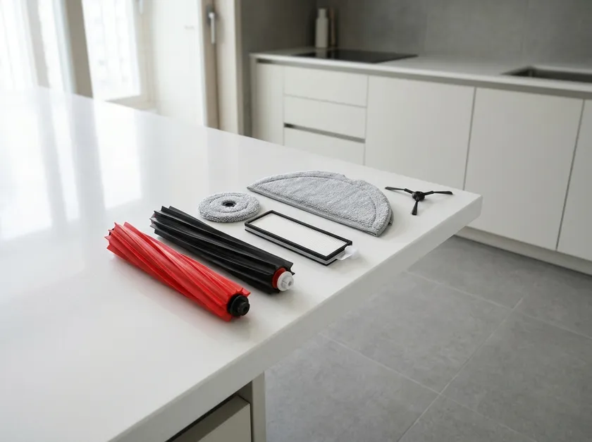
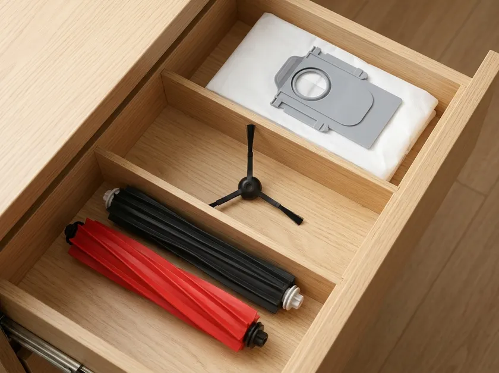

로보락 (Roborock)
로보락 S8 MaxV Ultra 소모품·세제 포함 세트｜타일 바닥 마모·물자국 관리
글·구성: 제이상점 · 기종별 1:1 호환 실물 점검 · 교체 주기 비교표 · 스마트스토어 패키지 안내

핵심 관리 · 선택 체크포인트
- 무광 포세린 타일이나 폴리싱 타일이 깔린 거실·주방은 줄눈 턱이 촘촘해 로봇청소기를 매일 돌리면 일반 마루보다
- 오주문 막는 S8 MaxV Ultra 1:1 실물 체결 디테일: 코너탭 필터와 적·흑 듀오롤러: 로보락 S8 MaxV Ultra 먼지통을 열어 보면 직사각형 테두리 한쪽 모서리에 손잡이가 달린 코너탭(모서리 탭) 필터가 장착되어 있습니다.
- 아래 상품 메인 이미지를 직접 누르시거나 [제이상점 로보락 S8 MaxV Ultra 세제 포함 1년·6개월·3개월 세트 옵션 바로 확인하기]에서 기간별 구성품 수량을 먼저 대조해 보세요.
- 로보락 S8 MaxV Ultra 핵심 부품 규격·타일 바닥 교체 신호표: 포세린·폴리싱 타일처럼 줄눈 마찰과 물얼룩이 눈에 띄기 쉬운 바닥에서 우선 확인해야 할 S8 MaxV Ultra 5종 규격과 교체 신호입니다.
- 24시간 교대 건조 루틴과 3개월·6개월·1년 세제 포함 세트 손익 비교: 물세척한 코너탭 필터와 반원형 메인·원형 미니 걸레를 덜 마른 채 바로 장착하면 타일 바닥에 꿉꿉한 물비린내가 배기 쉽습니다.
실물 부품 디테일 · 관리 구성 이미지




부품 규격 · 점검 기준표
| 부품 구분 | S8 MaxV Ultra 1:1 전용 규격 | 타일 바닥 점검 포인트 · 교체 신호 |
|---|---|---|
| 적·흑 듀오롤러 · 3발 브러시 | 나선형 고무 롤러 1쌍 + 3갈래 사이드브러시 | 타일 줄눈 마찰로 고무 날개 갈라짐·모 끝단 휘어짐 발생 시 교체 |
| 반원형 메인 · 원형 미니 걸레 | 음파 진동 메인 패드 + 모서리 스윙 미니 패드 | 타일 위 뿌연 물자국·패드 눌림 발생 시 마른 여분과 1쌍 교대 |
| 코너탭 필터 · 더스트백 · 세제 | 모서리 탭 직사각 필터 + 회색 칼라 봉투 + 전용 세제 | 필터 세척 후 24시간 완전 건조 · 도크 세제통 잔량 수시 보충 |
💡 교체 주기가 겹치는 필터·브러시·물걸레·더스트백은 단품 배송비를 여러 번 내기보다 로보락 S8 MaxV Ultra 기간별 세트(3개월·6개월·1년)로 미리 구비해 두면 물세척 후 24시간 교대 건조까지 끊김 없이 관리할 수 있습니다.
자주 묻는 질문 (FAQ)
Q. 1년 세트에 들어 있는 예비 듀오롤러와 회색 칼라 더스트백은 어떻게 보관해야 변형이 없을까요?
A. 세탁기 옆 습기가 많은 바닥이나 직사광선이 닿는 창틀에 오래 두면 고무 롤러 탄성이 떨어지고 더스트백 판지 칼라가 휘어질 수 있습니다. 통풍이 잘되는 건식 원목 분할 서랍이나 밀폐 수납함에 품목별로 나누어 두고, 줄눈 청소 후에는 듀오롤러 양끝 축에 감긴 머리카락을 주기적으로 제거해 주시면 부품 수명을 더 오래 지킬 수 있습니다.
Q. 로보락 S8 MaxV Ultra의 적·흑 듀오롤러 · 3발 브러시 규격과 관리 기준은 무엇인가요?
A. 나선형 고무 롤러 1쌍 + 3갈래 사이드브러시 규격을 사용하며, 타일 줄눈 마찰로 고무 날개 갈라짐·모 끝단 휘어짐 발생 시 교체 기준으로 점검·교체하면 청소 효율을 안정적으로 유지할 수 있습니다.
Q. 로보락 S8 MaxV Ultra의 반원형 메인 · 원형 미니 걸레 규격과 관리 기준은 무엇인가요?
A. 음파 진동 메인 패드 + 모서리 스윙 미니 패드 규격을 사용하며, 타일 위 뿌연 물자국·패드 눌림 발생 시 마른 여분과 1쌍 교대 기준으로 점검·교체하면 청소 효율을 안정적으로 유지할 수 있습니다.
제이상점 1:1 검수 추천 패키지 · 구매 안내
메인 추천 구성
대표 구성 참고가 70,100원대 (옵션·쿠폰별 스마트스토어 결제 화면 기준)
1년 세트6개월 세트3개월 세트
![[정품] 로보락 세제 전용 세정제 세정액 클리너 소모품 S10 S9 S8](../../assets/img/roborock-cleaner-product-eec13fec.webp)
함께 많이 찾는 보충 구성
용량 1L-1병용량 1L-2병(복수구매할인)
☑️ 주문 전 확인해 두면 좋은 제이상점 안심 포인트
· 기종별 1:1 전용 규격 검수: 모델명·연식에 맞는 호환·정품 구성을 검수해 오주문 불안을 줄였습니다.
· 해외직배송 미리 주문 팁: 중국 구매대행·해외직배송 상품이므로 마지막 여분 1개를 꺼내 쓰는 시점에 개인통관고유부호와 함께 여유 있게 주문해 두시면 훨씬 경제적인 비용으로 끊김 없이 교체하실 수 있습니다.
· 기종별 1:1 전용 규격 검수: 모델명·연식에 맞는 호환·정품 구성을 검수해 오주문 불안을 줄였습니다.
· 해외직배송 미리 주문 팁: 중국 구매대행·해외직배송 상품이므로 마지막 여분 1개를 꺼내 쓰는 시점에 개인통관고유부호와 함께 여유 있게 주문해 두시면 훨씬 경제적인 비용으로 끊김 없이 교체하실 수 있습니다.
📖 더 많은 가정 내 사용 스토리와 상세 후기가 궁금하시다면
📱 네이버 블로그 모바일 원문 보기 ↗